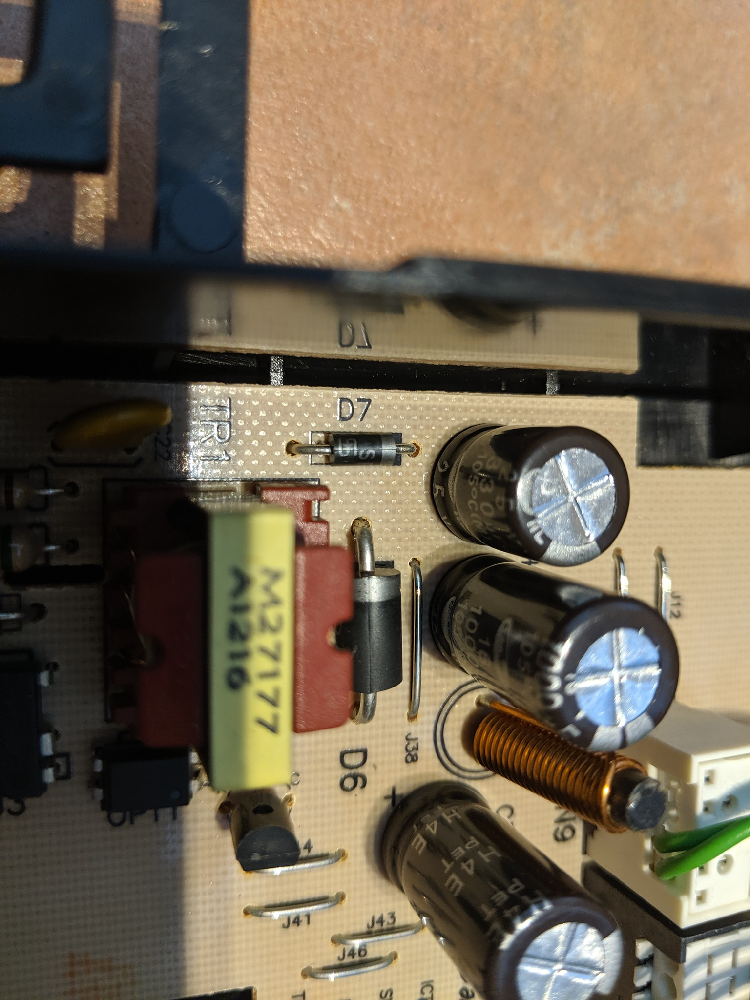

Washing machine repair
June 2019. Just after the warranty period ended, the washing machine stopped working. Still no power after changing the fuse in the plug I took a more hands on investigation.
Measuring voltages and resistance I narrowed it down to a diode on this board.
After finding its replacement on the internet the minimum I could buy was 100. Thankfully they were only £0.018p each.
When the replacement arrived I simply desoldered the broken Diode and put the new one in. As of june 2022 the washing machine has continued working without issues.